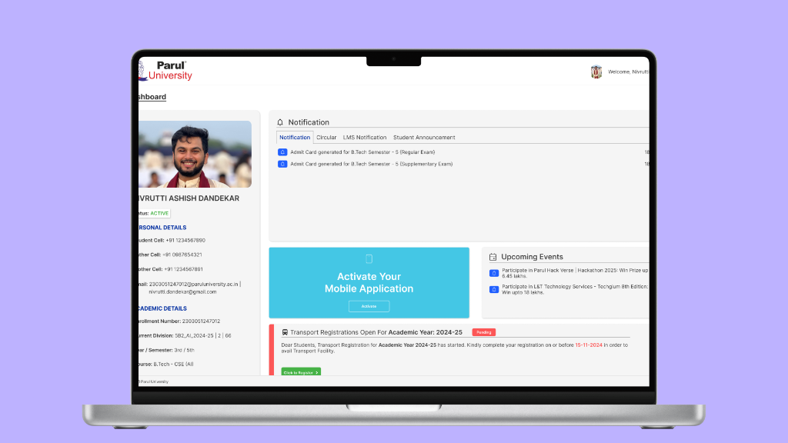
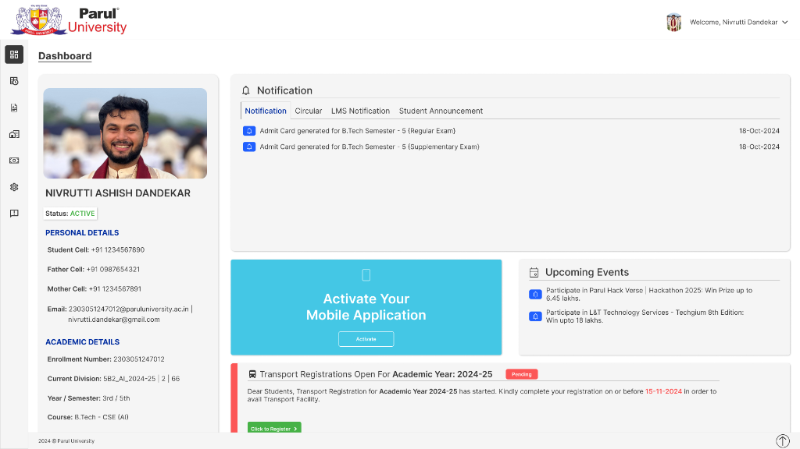
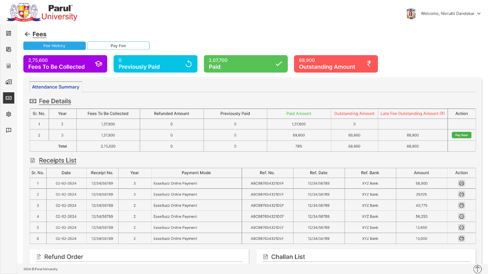
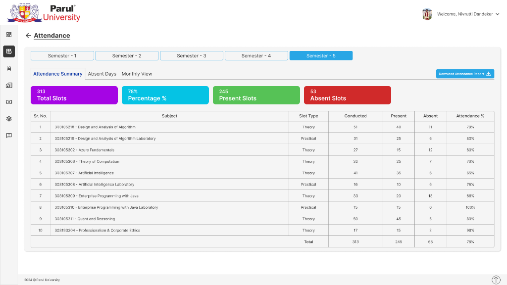

Parul University Student Portal
Parul University’s Student Portal enables students to manage their account, exam schedules, circulars, notifications, exam fees, academic fees, supplementary exam dates and fees, etc. While using the portal personally, I noticed several usability issues that made the experience feel cluttered and overwhelming, particularly for parents. Important information such as exam dates, notifications, etc, were not immediately accessible requiring users to navigate through multiple screens to find what they needed.
Problem Statement
As a student of the university there have been times when I myself felt issues in searching for something specific since the navigation hasn’t been very clear. I had to navigate through multiple screens to find what I needed. After reaching my final year, I had to download another app for all the placement news of the university, but I had to come back to the portal for other notifications.
Key Issues Identified
- Basic home screen / dashboard overview was cluttered
- Important actions like fees payment and exam fee payments required multiple steps
- Navigation felt overwhelming for new users
- Weak visual hierarchy made it difficult to prioritize key information
Design Goals
Based on the usability issues identified, the redesign focused on the following goals:
- Simplify the dashboard layout
- Improve information hierarchy
- Surface frequent actions for faster access
- Reduce cognitive load during basic student interactions
- Create a cleaner and more intuitive interface
UX Audit of the Existing Portal
I conducted a UX critique of the existing University Student Portal, analyzing the interface and identifying usability issues related to layout, navigation and information hierarchy.
- The dashboard was totally unstructured
- No clear interface or information about placement news or events news
- Key financial information was not emphasized
- Navigation required multiple steps to access common features
Ideation & Exploration
After identifying the usability issues, I began exploring ways to improve the overall structure of the portal. The main focus was to prioritize clarity and accessibility of key academic and financial information.
- A structured dashboard layout
- Quick access to frequent actions
- Clear academic overview
- Better grouping of related features
Final Design
The final design focuses on creating a cleaner, more intuitive student portal experience by prioritizing important academic information and simplifying navigation.
- A simplified dashboard with clear academic overview
- Quick access to common actions like academic overview and fee transactions
- Improved visual hierarchy to highlight important information
- Reduced interface clutter




Reflections & Learnings
This project was one of my early explorations into UI/UX design and was primarily driven by personal experience using the university’s student portal. Through this project, I learned the importance of information hierarchy, simplicity and clarity when designing educational platforms.